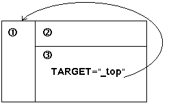
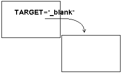
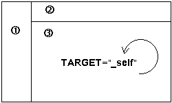
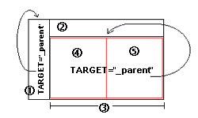

الدرس الحادي عشر
الإطارات (3)
[الأساسيات]
[الألوان]
[الخطوط]
[الفقرات والقوائم]
[الصور والرسومات]
[الوصلات التشعبية]
[الجداول1]
[الجداول2]
[الإطارات1]
[الإطارات2]
[الإطارات3]
[وسوم من هنا وهناك]
[الخرائط الصورية]
[النماذج1]
[النماذج2]
[الوسوم الخاصة]
[الويب واللغة العربية]
[وسوم Meta]
أهلاً وسهلاً بك إلى الدرس الحادي عشر من دروس HTML. كما ترى من العنوان لا زلنا نتابع في موضوع الإطارات، وفي القسم الثالث منه. وذلك لأهمية هذا الموضوع وتشابك خطوطه. وخصوصاً لأننا نحتاج إلى التعامل مع أكثر من وسم في نفس الوقت وداخل أكثر من ملف. مما يستدعي التركيز والتروي عندما نريد إنشاء صفحة إطارات.
لقد أنهينا في الدرسين الماضيين شرح كافة الوسوم والخصائص التي تتعلق بالإطارات، عدا واحدة هي NAME ووعدتك أن أقوم بشرحها بصورة وافية في درس مستقل. كما وعدتك أن نقوم بإجمال موضوع الإطارات والتدرب عليها من خلال مثال واقعي يتمثل بإنشاء صفحة إطارات لهذا الموقع وهاأنا ذا أفي بوعدي.
لقد قلت إن هذه الخاصية تعتبر من أهم خصائص الوسم <FRAME> لأنها تحدد طريقة تنسيق العمل بين الإطارات والصفحات وأسلوب عرضها. لنعتبر هذا تعريفاً مبدئياً. ولكي أوضح لك الهدف من هذه الخاصية، قم باستعراض المثال التالي ... الذي قمت فيه بتمثيل بعض الأجزاء من هذا الموقع (لنترك تلك الأمثلة المملة التي كنا نعمل عليها في هذا الدرسين السابقين ولنبدأ بالعمل الجدي). وأنقر على أزرار الوصلات التشعبية الموجودة في الإطار الأيسر ......وبالطبع لا تنسى النقر على زر BACK الموجود في متصفحك للعودة إلى هذه الصفحة. وقد تحتاج إلى نقره عدة مرات بحسب عدد المرات التي تنقلت فيها في صفحات الإطار.
ماذا وجدت؟!؟ إن الصفحات تظهر في نفس الإطار (أعرف أنك كنت تتوقع ظهورها في الإطار الآخر... فهل خيبت ظنّك؟). حسناً، لا زالت هذه الإطارات تحتاج إلى القليل من العمل لكي تعمل كما يجب. وقبل أن نكمل أود أن تتمعن في الشيفرات التالية، وهي في الواقع الشيفرات الخاصة بالملفات المستخدمة في هذا المثال. وأرجو أن تقوم بدراستها جيداً، على الأقل لكي تكون متأكداً من فهمك لكل الأفكار السابقة قبل أن تنتقل إلى النقاط التي ستلي.
شيفرة الملف الرئيسي الذي أسميته mainfile.html
<HTML>
<HEAD>
<TITLE>Main File</TITLE>
</HEAD>
<FRAMESET ROWS="60,*">
<FRAME SRC="header.html" NORESIZE SCROLLING="NO" MARGINHEIGHT="1" MARGINWIDTH="1">
<FRAMESET COLS="120,*">
<FRAME SRC="lftframe.html" NORESIZE SCROLLING="NO" MARGINHEIGHT="1" MARGINWIDTH="1">
<FRAME SRC="htmintro.html">
</FRAMESET>
</FRAMESET>
</HTML>
شيفرة الملف العلوي (الترويسة) الذي أسميته header.html
<HTML>
<HEAD>
<TITLE>Header File</TITLE>
</HEAD>
<BODY bgcolor="#BCD8EB">
<CENTER><IMG SRC="frambnr.jpg"></CENTER>
</BODY>
</HTML>
شيفرة الملف الذي يحتوي على الأزرار والوصلات التشعبية والذي أسميته lftframe.html
<HTML>
<HEAD>
<TITLE>Buttons</TITLE>
</HEAD>
<BODY BGCOLOR="#BCD8EB">
<A HREF="htutor01.html"><IMG SRC="lesson1.jpg"></A><BR>
<A HREF="htutor02.html"><IMG SRC="lesson2.jpg"></A><BR>
<A HREF="htutor03.html"><IMG SRC="lesson3.jpg"></A><BR>
<A HREF="htutor04.html"><IMG SRC="lesson4.jpg"></A><BR>
<A HREF="htutor05.html"><IMG SRC="lesson5.jpg"></A><BR>
</BODY>
</HTML>
وبالطبع بقي لدينا الإطار الأكبر وهو لا يحتوي على ملف خاص لأنه الإطار العام الذي نريد إظهار الملفات فيه. ولن يتم إجراء أي تعديل على تلك الملفات. وبصورة مبدئية لقد شاهدت أنه يحتوى على صفحة المقدمة والمسماه htmintro.html
وهنا يأتي دور الخاصية NAME والتي نقوم من خلالها بتعيين اسم ما للإطار -أي الإطار الذي نرغب أن تظهر به الملفات عندما نقوم بالنقر على الوصلات التشعبية- حيث سيتم فيما بعد استخدام هذا الإسم من أجل استهداف هذا الإطار من قبل الوصلات التشعبية في الإطارات الأخرى أو حتى في الصفحات الأخرى.
وبالمناسبة فقد حان الآن ذكر خاصية جديدة من خصائص الوسم <A> ... </A> ( وهو وسم الوصلات التشعبية كما عرفت في الدرس السادس.) وهذه الخاصية هي TARGET. (انتظر قليلاً وستعرف لماذا)دعنا نقوم بترتيب الأمور بصورة أكثر وضوحاً وتسلسلاً:
برأيك بأي من الملفات الثلاثة السابقة يجب أن نضع الخاصية NAME? سؤال سخيف! أليس كذلك؟ طالما أنها إحدى خصائص الوسم <FRAME> إذن من البديهي جداً أن ترد معه. وبما أن هذا الوسم يوضع فقط في الملف الرئيسي إذن هي توضع في الملف الرئيسي... هذه أصبحت واضحة! لكن مع أي وسم من وسوم <FRAME> الموجودة في الملف الرئيسي؟؟ بالطبع ليس مع الوسم الخاص بتعريف ملف الترويسة فهذا لا نريد استهدافه، وكذلك الأمر بالنسبة لتعريف ملف الوصلات التشعبية الذي لا نريد استهدافه أيضاً. إذن لم يبق لدينا إلا الوسم الخاص بتعريف الإطار العام الذي ستظهر به الملفات. وبافتراض أننا نريد تسمية هذا الإطار بالاسم mainwindow. وهو اسم اختلقته أنا حسب ما أريد وأستطيع إعطاءه أي اسم آخر أريده طالما أنه يبدأ بحرف أبحدي أو رقم وليس برمز خاص مثل /؟#$%^ (عدا الرمز _ الذي يستخدم في حالات خاصة سأذكرها لك لاحقاً في هذا الدرس).
إذن تصبح شيفرة الملف الأساسي هي:<HTML>
<HEAD>
<TITLE>Main File</TITLE>
</HEAD>
<FRAMESET ROWS="60,*">
<FRAME SRC="header.html" NORESIZE SCROLLING="NO" MARGINHEIGHT="1" MARGINWIDTH="1">
<FRAMESET COLS="120,*">
<FRAME SRC="lftframe.html" NORESIZE SCROLLING="NO" MARGINHEIGHT="1" MARGINWIDTH="1">
<FRAME SRC="htmintro.html" NAME="mainwindow">
</FRAMESET>
</FRAMESET>
</HTML>
وبهذا نكون قد إنتهينا من إعداد الملف الرئيسي ليكون ملف إطارات فعال مائة بالمائة. ونستطيع الآن استهداف ذلك الإطار من أي مكان باستخدام الإسم الذي عرفناه به.
المرحلة الثانية هي تعريف الوصلات التشعبية بطريقة تجعل الملفات المتعلقة بهذه الوصلات تظهر في الإطار المحدد. وهنا يأتي دور الخاصية TARGET سالفة الذكر لكي تقوم على الرحب والسعة بأداء هذه الوظيفة. وسوف نعمل الآن على الملف المسمى lftframe.html. أليس هو الملف الذي يحتوي على الوصلات التشعبية؟! ليصبح بالشكل التالي:
<HTML>
<HEAD>
<TITLE>Buttons</TITLE>
</HEAD>
<BODY BGCOLOR="#BCD8EB">
<A HREF="htutor01.html" TARGET="mainwindow"><IMG SRC="lesson1.jpg"></A><BR>
<A HREF="htutor02.html" TARGET="mainwindow"><IMG SRC="lesson2.jpg"></A><BR>
<A HREF="htutor03.html" TARGET="mainwindow"><IMG SRC="lesson3.jpg"></A><BR>
<A HREF="htutor04.html" TARGET="mainwindow"><IMG SRC="lesson4.jpg"></A><BR>
<A HREF="htutor05.html" TARGET="mainwindow"><IMG SRC="lesson5.jpg"></A><BR>
</BODY>
</HTML>
والآن حان وقت العرض، أنقر هنا لنشاهد صفحة الإطارات بعد التعديل:
لقد نجحنا... أليس كذلك
الحقيقة أننا لم ننجح بصورة مطلقة، بل إلى حد ما... وأعتذر لك لأني نغصت عليك هذا النجاح. لكن طالما أننا نريد الوصول إلى أفضل مستوى وأعلى أداء لموقعنا فيجب علينا دائماً تطبيق القواعد التي تضمن ذلك. ولكي أوضح لك السبب الذي يجعلني أتكلم كالفلاسفة سوف أطلب منك العودة إلى الصفحة الرئيسية للإطارات بعد أن قمت بإضافة وصلات تشعبية إضافية لها، واحدة خاصة بالإنتقال إلى ... صفحة الإطارات نفسها، أي إعادة تحميل الصفحة على الشاشة. والثانية للإنتقال من طريقة العرض بالإطارات إلى العرض بدون إطارات. لذلك أنقر هنا رجاءً. وقم بتجربة النقر على هذه الوصلات الجديدة.
مشكلة جديدة، أليس كذلك؟ ففي الحالة الأولى تم تحميل الصفحة داخل الإطار نفسه، وبذلك أصبحت الصفحات متداخلة في ما بينها، وكذلك الأمر في الحالة الثانية. أي أننا بإختصار لا نستطيع إبقاء الوسم بالشكل:
<A HREF="filename.html" TARGET="mainwindow"> ... </A>
كما لا نستطيع كتابته بالشكل التالي:
<A HREF="filename.html"> ... </A>
وطبعاً أنت تعرف السبب في كلتا الحالتين.
لقد وقعنا في مصيدة الإطارات. إذن فما الحل؟ الحل توفره لغة HTML نفسها من خلال وضع قيمة معينة للخاصية TARGET وهي "_top" لتخبر المتصفح أن يقوم بتحميل الصفحة في المستوى الأعلى من الشاشة. أي ان يقوم بإلغاء أي إطارات أو صفحات عادية موجودة أصلاً وأن يحمل الصفحة الجديدة مكانها. وهذه القيمة معرفة بشكل مسبق في لغة HTML وليست من عندي كما في الإسم mainwindow.
والحقيقة أنه يوجد ثلاث قيم أخرى بالإضافة إلى _top معرفة بشكل مسبق في لغة HTML لتحدد موقع ظهور الصفحة المعنية. ويجب أن تتذكر دائماً أنها تكتب بالأحرف الصغيرة lowercase. فإذا كتبت بالأحرف الكبيرة فلن تحصل على النتيجة التي تريدها لأنها ستعتبر في هذه الحالة وكأنها أسماء عادية. وهذه هي القيم الأربعة:
_top
تحمل الصفحة في أعلى مستوى للشاشة أي تلغي الإطارات الموجودة أصلاً

_blank
تقوم بفتح شاشة جديدة وفارغة للمتصفح وتعرض الصفحة المحملة فيه

_self
(الحالة الإفتراضية) تقوم بتحميل الصفحة في نفس الإطار الذي توجد به الوصلة التشعبية التي تم النقر عليها، (وبالطبع هذا ما يحدث دائما دون وجود هذه القيمة، أليس كذلك؟)

_parent
تقوم بعرض الإطار المحمل مكان الإطار الأب،
وتأمل الشكل التالي الذي يمثل صفحة إطارات مركبة. أنت تعرف أننا نحتاج إلى ثلاثة أزواج من الوسوم <FRAMESET> ... </FRAMESET> لإخراج مثل هذه الصفحة.
الأول لتحديد الصفحة ككل
الثاني لتحديد الإطارين 2 و 3 المتفرعين من الصفحة الرئيسية
الثالث لتحديد الإطارين 4 و 5 المتفرعين من الإطار 3
وبالتالي نقول أن الصفحة الرئيسية هي الأب (أو الأم إذا أردت) للإطارين 2 و 3 وأن الإطار 3 هو الأب للإطارين 4 و 5. وعلى سبيل المثال إذا احتوى الإطار 5 أو 4 على وصلة تشعبية هدفها القيمة _parent لتم تحميلها مكان الإطار 3... وهكذا الأمر بالنسبة للإطارين 1 و 2 بمقابل الصفحة الرئيسية.
وللتمييز بين هذه القيمة والقيمة _top فإن القيمة _top تقوم بالتحميل في المستوى الأول (الأعلى) دائماً وبغض النظر عن موقع الوصلة التشعبية.ونعود الآن إلى صفحتنا. فلو أضفنا السطرين التاليين إلى ملف الوصلات التشعبية:
<A HREF="mainfile.html" TARGET="_top"><IMG SRC="mainpage.jpg"></A><BR>
<A HREF="htmintro.html" TARGET="_top"><IMG SRC="noframes.jpg"></A><BR>
لحصلنا على النتيجة المرجوة. جرّب ذلك وبذلك تستطيع أن تقول وبكل ثقة
نجحنا بجدارة

| إتش.بي بالعربية © 1998-1999 يحيى الشريف |
H.P in arabic © 1998-1999 Yahya Al-Sharif |